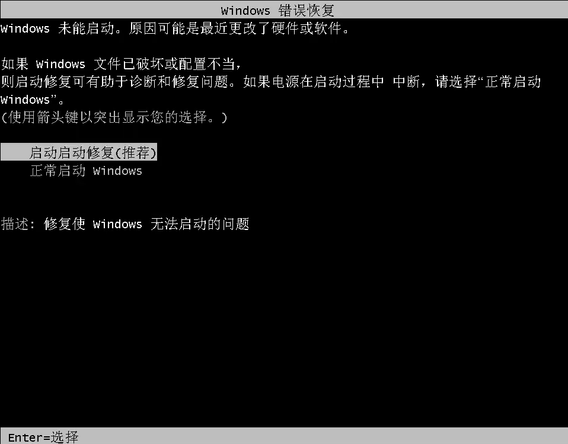
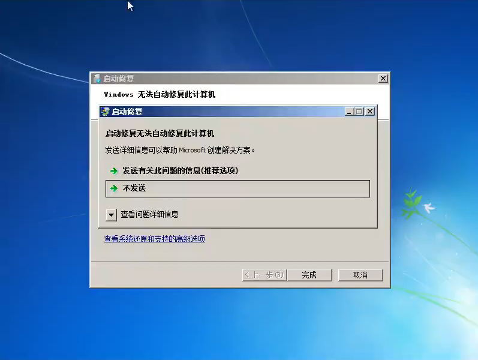
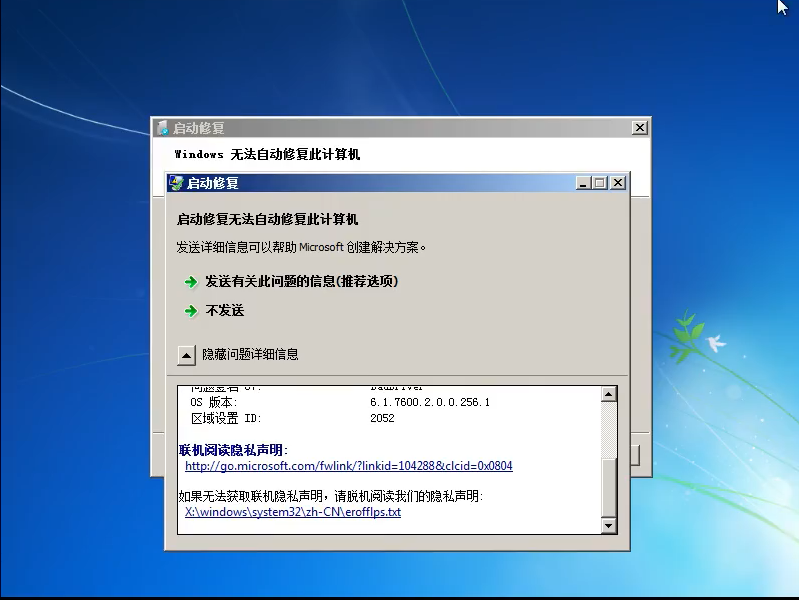
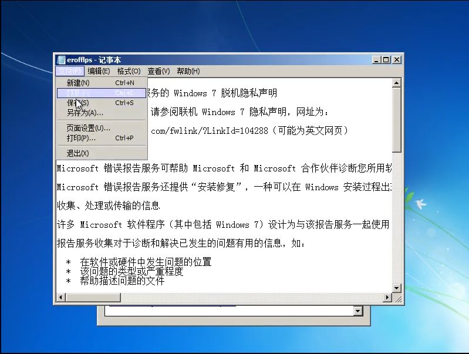
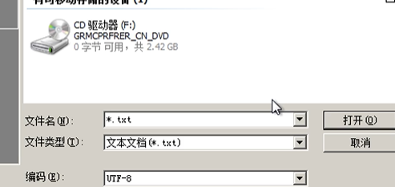
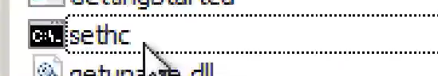
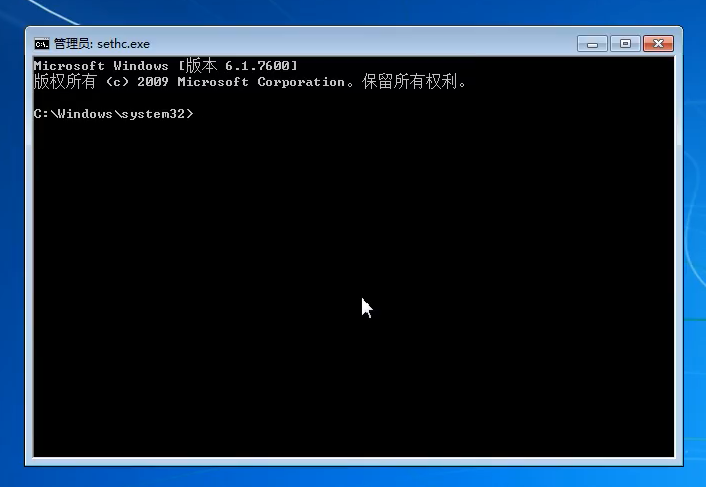

来自之前cnblog的博客
源地址：https://www.cnblogs.com/This-is-Y/p/12271610.html
先讲思路，在锁定界面下，连续按5次shift会运行c/windows/system32/sethc.exe文件,然后通过异常关机,触发windows的修复策略,然后打开脱机文档,然后掉包sethc.exe文件为cmd.exe文件,重启电脑,触发sethc.exe,实际上是打开了cmd.exe,然后通过net命令修改账户密码
win7:
先异常关闭windows系统,再启动,在windows错误恢复界面,点击启动修复

等待,出现如下界面

点击详细信息,拉到最下面,点开脱机阅读隐私声明

然后就会打开一个文件,用记事本打开.点击右上角的打开文件,

在这里,完成掉包工作,,(注意修改下面的文件类型,不然看不到exe文件)

掉包完成后(建议复制一份cmd.exe文件),重启电脑,连按5次shift,然后就可以打开cmd.exe文件了


关于net命令的用法,详细在这里可以看到:https://www.cnblogs.com/lonelyxmas/p/9343815.html
这里我简单说一下要用到的:
net user 当前账户名 “” 让当前账户密码为空,(在本该填写密码的位置填写 两个双引号 设空)
net user 新建账户名 新建账户密码 /add 新建一个属于自己的账户(此时权限不足,需要提权)
net localgroup administrators 你的新建的账户名 /add 使新建的账户达到administrators权限
net user 新建的账户名 /del 注销后,再运行一次这样操作,再cmd里面用这条命令删除账户,消除证据
winxp：
思路，从bios系统修改电脑启动顺序，让u盘启动优先级高于硬盘，之后插入制作好的pe盘
网上搜索pe系统，可以找到如大白菜，老毛桃等pe系统，安装到u盘上，然后在电脑开机的时候，加入bios系统，具体进入方法因电脑而异，需要上网去查，进入后，在boot下，修改 优先级，之后插入u盘，重启电脑。进入pe系统，差不多就完成了。因为u盘没在身边，所有就简单记录一下，没有实验。